Despre noi
Radijator Inženjering d.o.o. este continuatorul juridic al atelierului artizanal „Radijator”, fondat în 1991, a cărui activitate principală a fost montajul și întreținerea sistemelor de încălzire centrală. Primul cazan de apă caldă pe combustibil solid l-am produs în anul 1985.
Compania funcționează în forma actuală din anul 2002 și progresează constant, urmărind să fie printre primele în aplicarea tehnologiilor noi, în calitatea produselor și în dezvoltarea de noi piețe europene.
Prin extinderea și perfecționarea producției am ajuns la nivelul la care cazanele sunt fabricate cu tehnologii moderne de clasă mondială. În prelucrarea tablei se remarcă tăierea laser, procedeele CNC cu plasmă și perforarea CNC. Sudura se realizează robotic și cu echipamente automate. Cel mai bun indicator al calității produselor și serviciilor este faptul că producția crește de la an la an.
Astăzi, Radijator Inženjering are peste 350 de angajați, dintre care 40 sunt ingineri mecanici absolvenți care lucrează zilnic la perfecționarea calității produselor.
Constanța calității produselor și a activității companiei este confirmată prin certificarea sistemului de management al calității ISO 9001:2008.
Radijator Inženjering este un producător local de cazane pe biomasă cu tradiție îndelungată, recunoscut pentru soluții de încălzire fiabile și avansate tehnologic. Prin dezvoltarea propriilor procese de producție și aplicarea tehnologiilor moderne, realizăm produse care răspund celor mai înalte cerințe ale pieței privind calitatea, eficiența și durata lungă de exploatare.
Producția noastră include cazane cu puteri de la 6 la 600 kW, destinate încălzirii caselor familiale, clădirilor rezidențiale și comerciale, instituțiilor publice și instalațiilor industriale. Datorită gamei largi și posibilității realizării sistemelor în cascadă, putem oferi soluția optimă pentru fiecare obiectiv și fiecare nevoie.
Calitatea produselor noastre este rezultatul materialelor atent selectate, al producției precise și al controlului riguros al calității în toate etapele procesului. Fiecare cazan este dezvoltat pentru a asigura eficiență energetică maximă, funcționare fiabilă și exploatare pe termen lung cu costuri minime de întreținere.
Acordăm o atenție specială inovațiilor și îmbunătățirii tehnologiei de producție, pentru a oferi utilizatorilor soluții moderne care combină un nivel ridicat de automatizare, operare simplă și valorificare maximă a energiei.
Toate produsele noastre sunt proiectate și fabricate în conformitate cu standardele și reglementările europene aplicabile în domeniul cazanelor, confirmând siguranța, fiabilitatea și calitatea lor ridicată.
Alegând cazanele Radijator Inženjering, alegeți un produs local, calitate verificată și un partener care, prin experiență, suport profesional și soluții complete de sistem, oferă siguranță pe întreaga durată de viață a sistemului de încălzire.
O companie cu 35 de ani de experiență în proiectarea, fabricarea și inovarea cazanelor care încălzesc mii de obiective în întreaga Europă!
Tehnologie și calitate
Producție conform standardelor europene moderne

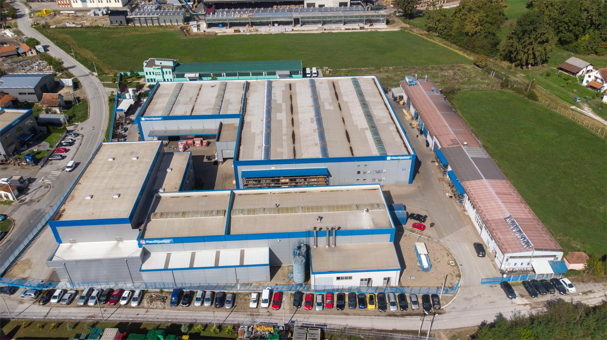
Pe măsură ce producția s-a extins și s-a perfecționat, cazanele au început să fie fabricate cu cele mai moderne tehnologii: tăiere laser, procedeu CNC plasmă, perforare CNC, sudură robotică și sudură automatizată.
Astăzi Radijator Inženjering are peste 350 de angajați, printre care 40 de ingineri mecanici absolvenți care lucrează zilnic la îmbunătățirea calității produselor.
PROGRAM DE PRODUCȚIE - INDUSTRIE

Modele seria TKAN
Cazanele industriale pe biomasă sunt realizate din tablă de cazan cu grosimea de 6 mm și mai mult. Schimbătorul de căldură este realizat din țevi de cazan fără sudură. Randamentul depășește 90% la peleți. Temperatura gazelor de ardere la ieșire este între 170 și 190 de grade în regimuri superioare, valoare care poate fi verificată pe afișajul automatizării. Sunt disponibile în gama de puteri 60-300 kW.

Modele seria TKAN Integra
Cazanul industrial pe biomasă reprezintă o versiune îmbunătățită a cazanului standard TKAN. Este echipat cu focar zidit, automatizare mai avansată și echipamente auxiliare mai bogate, obținându-se fiabilitate mai mare, eficiență mai bună a arderii și posibilități mai largi de utilizare. Este realizat din tablă de cazan cu grosimea de 6 mm și mai mult, cu schimbător de căldură din țevi de cazan fără sudură. Randamentul depășește 90%, iar gama de puteri disponibilă este 80-600 kW.

Sisteme în cascadă
Sistemele în cascadă reprezintă o combinație de două sau mai multe cazane conectate într-un sistem unic, cu siloz comun pentru depozitarea peleților. O astfel de configurație permite o putere totală instalată mai mare, funcționare mai fiabilă, distribuție uniformă a sarcinii și eficiență energetică mai ridicată a sistemului.

Echipamente suplimentare
Pe lângă cazane, oferta include echipamente auxiliare complete pentru formarea unui sistem funcțional de încălzire. Gama cuprinde silozuri pentru depozitarea peleților, transportoare melcate, elevatoare, rezervoare tampon, automatizare și alte echipamente necesare pentru transportul, dozarea și controlul fiabil al peleților, precum și pentru funcționarea sigură și eficientă a întregului sistem.
CAZAN DE APĂ CALDĂ PE PELEȚI CU ALIMENTARE AUTOMATĂ - MODEL TKAN
(Disponibil în gama de puteri 60 - 300 [kW]) Cazanul TKAN a fost dezvoltat cu scopul ca RADIJATOR INŽENJERING să ofere pieței un cazan ale cărui proprietăți mecanice și termice sunt adaptate în mod special biomasei ca combustibil. Pe de altă parte, cerințele pieței sunt orientate către o universalitate cât mai mare a combustibilului, astfel încât TKAN poate fi alimentat și cu lemn, caz în care alimentarea este manuală.

Prin designul exterior, dimensiunile focarului și deschiderile pentru alimentare și curățare, TKAN păstrează toate calitățile modelelor anterioare prin care RADIJATOR INŽENJERING este recunoscut pe piață. Partea de apă a cazanului și transferul de căldură dintre gazele de ardere și apă prin schimbătorul tubular sunt adaptate biomasei. Datorită utilizării ventilatorului, respectiv a tirajului forțat, traseul gazelor de ardere este mai lung decât la cazanele standard. Din același motiv se pot utiliza dirijori ai gazelor de ardere, așa-numitele turbulatoare, care cresc suplimentar randamentul cazanului. Turbulatoarele sunt spirale realizate din material special.
Randamentul la peleți depășește 90%. În regimuri normale, temperatura gazelor de ardere la ieșire este de aproximativ 160 °C, iar în regimuri maxime este sub 180 °C. Aceste valori pot fi citite în orice moment pe afișaj.
Toate componentele părții de apă a cazanului sunt realizate din țevi fără sudură de calitate ST 35.4 și din tablă de cazan cu grosimea de 5 mm și mai mult, în funcție de puterea cazanului. Tablele sunt de calitate 1.0425 conform standardului UE, respectiv P265GH conform standardului EUII. Focarul funcționează pe principiul așa-numitului focar ascendent, în care combustibilul din zona de transport se deplasează vertical în sus către zona de ardere. Este realizat din materiale izolante masive și fontă cenușie. Transportul combustibilului este asigurat prin transportoare melcate.
Tabelul 1. Puteri disponibile
| TIP CAZAN | TIP CAZAN | TIP CAZAN | TKAN 60 | TKAN 80 | TKAN 100 | TKAN 150 | TKAN 200/250/300 |
|---|---|---|---|---|---|---|---|
| UM | |||||||
| Putere | Putere | kW | 60 | 80 | 100 | 150 | 200/250/300 |
| Presiune de lucru | Presiune de lucru | kPa | 300 | 300 | 300 | 300 | 300 |
| Presiune de probă | Presiune de probă | kPa | 450 | 450 | 450 | 450 | 450 |
| Volum apă în cazan | Volum apă în cazan | L-cca | 276 | 368 | 460 | 690 | 920/1150/1380 |
| Masă cazan | Masă cazan | kg | 655 | 915 | 1073 | 1665 | 2260/2800/3080 |
| Masă siloz | Masă siloz | kg | 106 | 100 | 110 | 162 | 180/220/220 |
| As | mm | 610 | 610 | 810 | 1010 | 1394 | |
| Dimensiuni | B | mm | 1020 | 1020 | 1176 | 1456 | 1830 |
| Dimensiuni | Hs | mm | 1740 | 1736 | 1611 | 1875 | 1822/1822/2070 |
| V | lit. | 290 | 305 | 680 | 1600/2330/3115 | ||
| Cantitate de peleți în siloz | Cantitate de peleți în siloz | kg | 180 | 190 | 410 | 1000/1500/2000 |
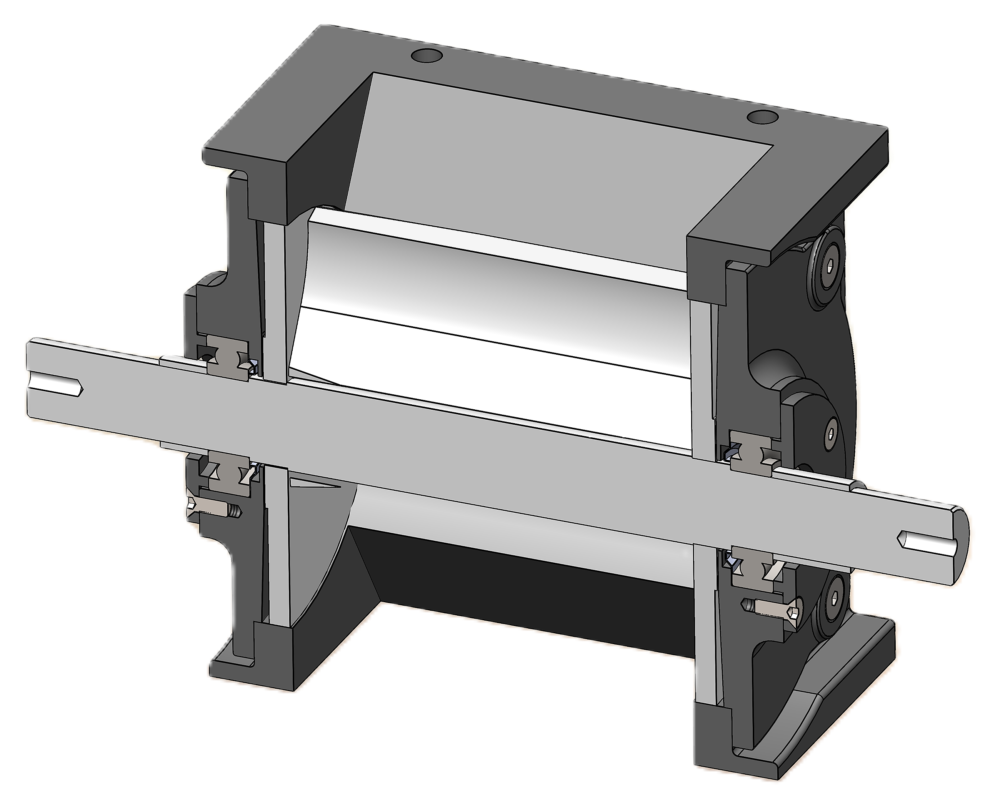
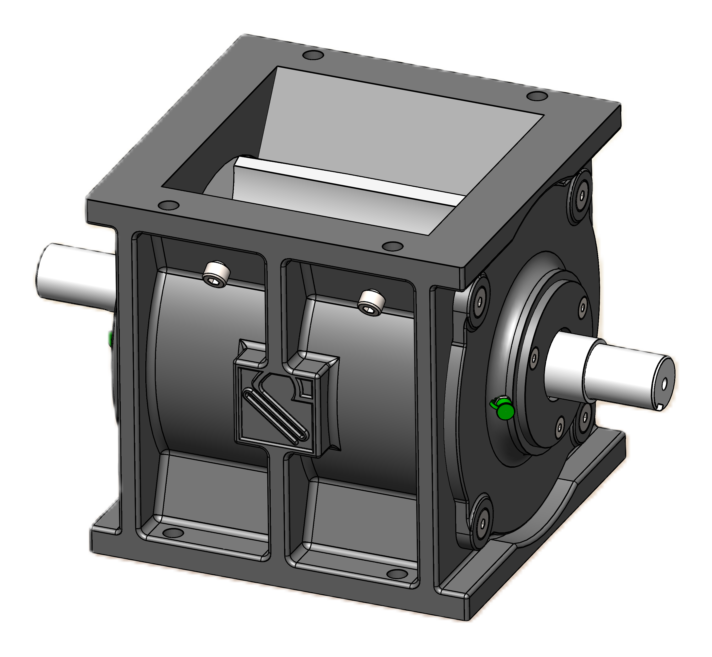
SECȚIUNE CAZAN TKAN CU DESCRIEREA ELEMENTELOR

- Turbulatoare
- Schimbător tubular
- Ușă pentru curățarea schimbătorului tubular și a cazanului
- Dulap de comandă cu automatizare
- Cutie pentru cenușă
- Ușă pentru alimentare și aprindere
- Spirală pentru evacuarea automată a cenușii din zona focarului
- Focarul cazanului
- Segmente turnate
- Motor pentru acționarea spiralei de curățare automată a focarului
- Ax inferior al transportorului melcat
- Dozator celular (valvola)
- Ax superior al transportorului melcat
- Schimbător pentru protecție termică
TABEL CU DIMENSIUNILE CAZANULUI TKAN

| DIMENSIUNI | DIMENSIUNI | DIMENSIUNI | TKAN 60 | TKAN 80 | TKAN 100 | TKAN 150 | TKAN 200 | TKAN 250 | TKAN 300 | |
|---|---|---|---|---|---|---|---|---|---|---|
| A | mm | mm | 680 | 730 | 730 | 850 | 1005 | 1260 | 1260 | |
| A1 | mm | mm | 1355 | 1788 | 2080 | 2395 | 2945 | 3456 | 3455 | |
| As | mm | mm | 610 | 610 | 810 | 1010 | 1394 | 1394 | 1394 | |
| B | mm | mm | 1020 | 1020 | 1176 - 1286 | 1456 | 1830 | 1830 | 1830 | |
| B1 | mm | mm | 1518 | 1565 | 1727 | 2070 | 2121 | 2546 | 2546 | |
| C | mm | mm | 1125 | 1573 | 1573 | 1681 | 2044 | 2114 | 2114 | |
| ØD | mm | mm | 200 | 200 | 200 | 250 | 250 | 300 | 300 | |
| E | mm | mm | 675 | 417 | 417 | 785 | 675 | 707 | 707 | |
| G | mm | mm | 360 | 389 | 389 | 360 | 465 | 467 | 467 | |
| H | mm | mm | 1564 | 1960 | 1960 | 2151 | 2547 | 2663 | 2663 | |
| Hs | col | col | 1740 | 1736 | 1611 | 1875 | 1822 | 1822 | 2070 | |
| D1 | col | col | 6/4" | 2" | 2" | 2" | DN80 NP6 | DN80 NP6 | DN80 NP6 | |
| D2 | col | col | 6/4" | 2" | 2" | 2" | DN80 NP6 | DN80 NP6 | DN80 NP6 | |
| D3 | col | col | 1/2" | 1/2" | 1/2" | 1/2" | 1" | 1" | 1" | |
| D4 | col | col | 3/4" | 3/4" | 3/4" | 3/4" | DN40 NP16 | DN40 NP16 | DN40 NP16 | |
| D5 | col | col | 1/2" | 1/2" | 1/2" | 1/2" | 1/2" | 1/2" | 1/2" | |
| D6 | col | col | 1/2" | 1/2" | 1/2" | 1/2" | 1/2" | 1/2" | 1/2" | |
TABEL CU DIMENSIUNILE SILOZULUI TKAN

| DIMENSIUNI | DIMENSIUNI | DIMENSIUNI | DIMENSIUNI | DIMENSIUNI | |
|---|---|---|---|---|---|
| A | B | H | V | Cantitate de peleți în siloz | |
| mm | mm | mm | lit. | kg | |
| TKAN 80 | 606 | 1020 | 1736 | 290 | 180 |
| TKAN 100 | 810 | 1176 | 1611 | 305 | 190 |
| TKAN 150 | 1010 | 1456 | 1875 | 680 | 410 |
| TKAN 200/250/300 | 1394 | 1830 | 1828 | 1600 | 1000 |
| TKAN 200/250/300 | 1394 | 1830 | 2138 | 2330 | 1500 |
| TKAN 200/250/300 | 1394 | 1830 | 2448 | 3115 | 2000 |
CAZAN DE APĂ CALDĂ PE PELEȚI CU ALIMENTARE AUTOMATĂ, DESPRĂFUIRE ȘI CICLON - MODEL TKAN INTEGRA
(Disponibil în gama de puteri 80 - 600 [kW])
TKAN INTEGRA reprezintă o nouă generație de cazane industriale pe biomasă, dezvoltată ca îmbunătățire a modelului standard TKAN. Modelul a fost creat ca răspuns la cerințele pieței pentru un nivel mai ridicat de automatizare, eficiență energetică superioară și fiabilitate mai mare în exploatare, păstrând soluțiile constructive verificate pentru care RADIJATOR INŽENJERING este recunoscut.
Datorită focarului zidit, sistemului de ardere îmbunătățit, automatizării moderne și echipării standard mai bogate, TKAN INTEGRA asigură funcționare stabilă, valorificare maximă a energiei și durată lungă de viață a componentelor cheie. Construcția cazanului este realizată din tablă de cazan cu grosimea de 6 mm și mai mult, iar schimbătorul tubular este realizat din țevi de cazan fără sudură, asigurând rezistență mecanică ridicată, fiabilitate și durabilitate.
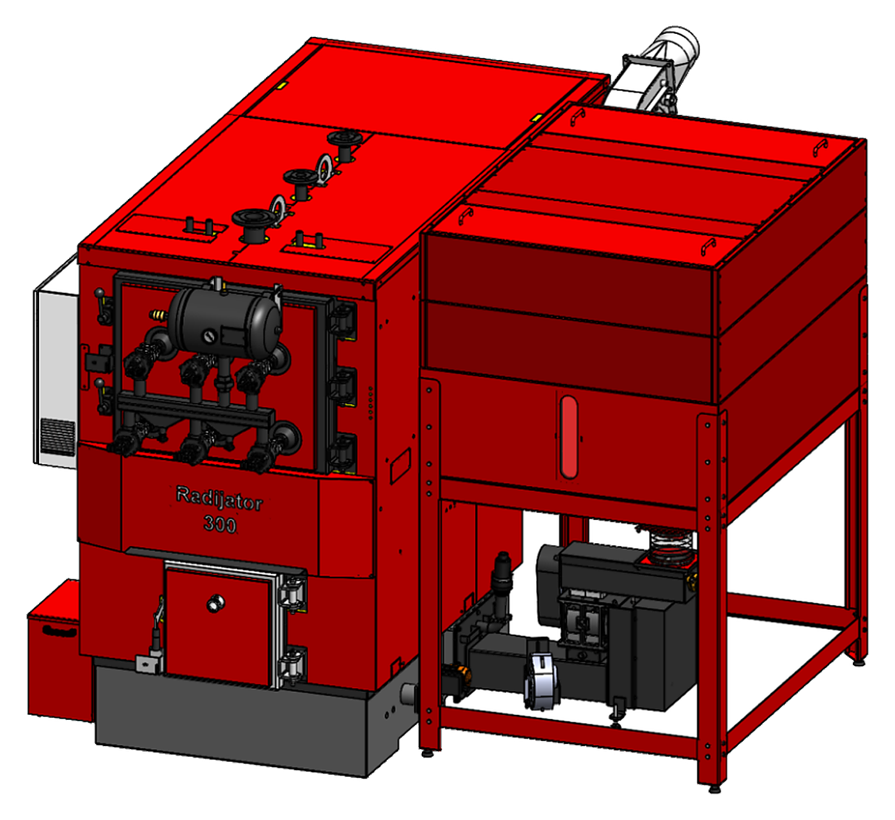
Focarul zidit este unul dintre avantajele principale ale modelului TKAN INTEGRA. Această construcție permite arderea completă și stabilă a combustibilului, emisii minime de gaze nocive și particule de praf, precum și utilizarea maximă a energiei conținute în peleți. În același timp, piesele din oțel ale cazanului nu sunt expuse direct flăcării, ceea ce prelungește semnificativ durata de viață a cazanului.
Pentru reducerea cantității de particule evacuate către coș este prevăzut un ciclon, iar la configurațiile mai mari un multiciclon cu ventilator centrifugal. Producătorul recomandă în mod special ciclonul atunci când se utilizează curățarea pneumatică a schimbătorului, deoarece atunci cenușa și funinginea sunt evacuate suplimentar din cazan. La modelele TKAN Integra mai mari se utilizează multiciclon cu ventilator centrifugal. Mai exact, la modelele TKAN 80 Integra și TKAN 100 Integra ventilatorul este montat pe racordul de fum, iar la modelele TKAN 150 Integra, TKAN 200 Integra, TKAN 250 Integra și TKAN 300 Integra este proiectat multiciclon cu ventilator centrifugal.
La anumite configurații TKAN se utilizează ventilator pe partea de evacuare a gazelor arse, iar la sistemele mai mari multiciclonul poate fi echipat cu ventilator centrifugal. Acest aspect este important la proiectarea întregului coș de fum, mai ales în cazul mai multor cazane, traseelor de fum mai lungi, ciclonului/multiciclonului, numărului mai mare de coturi sau al unui coș comun.
Cazanele din seria TKAN INTEGRA sunt echipate standard cu sistem pentru curățarea automată a zonei din jurul focarului, iar schimbătorul tubular se curăță automat cu aer comprimat. Prin impulsuri periodice de aer, sistemul elimină depunerile de funingine din țevile de fum, menține randamentul ridicat al cazanului și reduce semnificativ necesarul de întreținere manuală.

| TIP CAZAN | TIP CAZAN | TIP CAZAN | TKAN 80 Integra | TKAN 100 Integra | TKAN 150 Integra | TKAN 200/250/300 Integra |
|---|---|---|---|---|---|---|
| UM | ||||||
| Putere | Putere | kW | 80 | 100 | 150 | 200/250/300 |
| Presiune de lucru | Presiune de lucru | kPa | 300 | 300 | 300 | 300 |
| Presiune de probă | Presiune de probă | kPa | 450 | 450 | 450 | 450 |
| Volum apă în cazan | Volum apă în cazan | L-cca | 368 | 460 | 690 | 920/1150/1380 |
| Masă cazan | Masă cazan | kg | 1191 | 1415 | 2288 | 3240/5293/5605 |
| Masă siloz | Masă siloz | kg | 100 | 165 | 165 | 225 |
| As | mm | 606 | 1006 | 1006 | 1394 | |
| Dimensiuni | B | mm | 1020 | 1456 | 1456 | 1830 |
| Dimensiuni | Hs | mm | 1736 | 1872 | 1872 | 1822 |
| V | lit. | 290 | 680 | 680 | 1600/2330/3115 | |
| Cantitate de peleți în siloz | Cantitate de peleți în siloz | kg | 180 | 410 | 410 | 1000/1500/2000 |
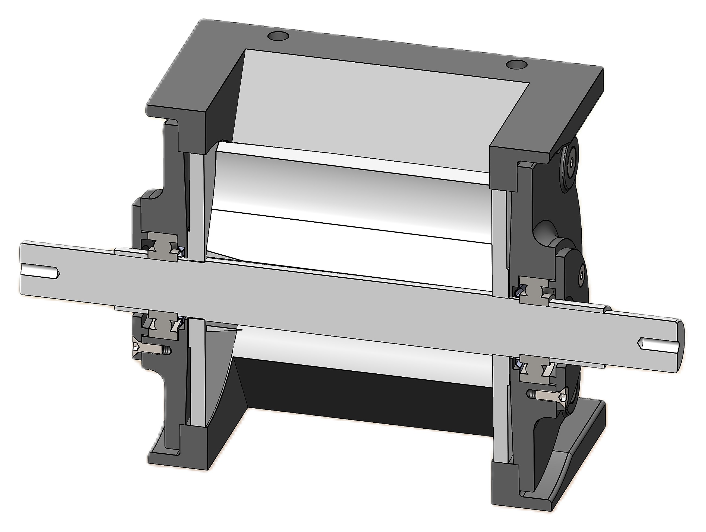
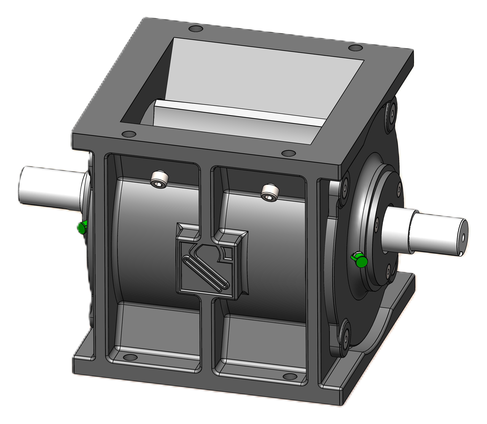
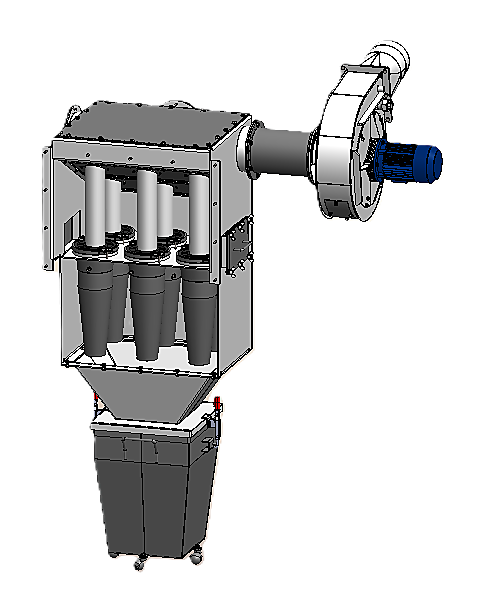
SECȚIUNE CAZAN TKAN INTEGRA CU DESCRIEREA ELEMENTELOR

- Turbulatoare
- Schimbător tubular
- Ușă pentru curățarea schimbătorului tubular și a cazanului
- Dulap de comandă cu automatizare
- Rezervor de aer comprimat
- Electrovalvă cu impuls
- Ușă pentru alimentare și aprindere
- Cutie pentru cenușă
- Căptușeala focarului
- Spirală pentru evacuarea automată a cenușii din zona focarului
- Motor pentru acționarea spiralei de curățare automată a focarului
- Segmente turnate
- Focarul cazanului
- Ax inferior al transportorului melcat
- Dozator celular (valvola)
- Ax superior al transportorului melcat
- Ventilator centrifugal al multiciclonului
- Multiciclon
- Schimbător pentru protecție termică

| DIMENSIUNI | DIMENSIUNI | TKAN 80 Integra | TKAN 100 Integra | TKAN 150 Integra | TKAN 200 Integra | TKAN 250 Integra | TKAN 300 Integra | |
|---|---|---|---|---|---|---|---|---|
| A | mm | 730 | 730 | 850 | 1005 | 1380 | 1380 | |
| A1 | mm | 1788 | 2276 | 2394 | 2942 | 3200 | 3200 | |
| As | mm | 606 | 1006 | 1006 | 1394 | 1394 | 1394 | |
| B | mm | 1020 | 1456 | 1456 | 1830 | 1830 | 1830 | |
| B1 | mm | 1655 | 1817 | 3099 | 3386 | 3755 | 3755 | |
| B2 | mm | 1595 | 1767 | 2729 | 2988 | 3360 | 3360 | |
| C | mm | 1507 | 1507 | 2080 | 2515 | 2312 | 2312 | |
| ØD | mm | 180 | 200 | 190 | 190 | 190 | 190 | |
| E | mm | 390 | 390 | 359 | 465 | 467 | 467 | |
| G | mm | 417 | 417 | 784 | 675 | 707 | 707 | |
| H | mm | 1960 | 1960 | 2151 | 2547 | 2413 | 2413 | |
| Hs | col | 1736 | 1872 | 1872 | 1822 | 1822 | 1822 | |
| D1 | col | 2" | 2" | 2" | DN80 NP6 | DN80 NP6 | DN80 NP6 | |
| D2 | col | 2" | 2" | 2" | DN80 NP6 | DN80 NP6 | DN80 NP6 | |
| D3 | col | 1/2" | 1/2" | 1/2" | DN40 NP16 | DN40 NP16 | DN40 NP16 | |
| D4 | col | 3/4" | 3/4" | 3/4" | DN40 NP16 | DN40 NP16 | DN40 NP16 | |
| D5 | col | 1/2" | 1/2" | 1/2" | 1" | 1" | 1" | |
| D6 | col | 1/2" | 1/2" | 1/2" | 1/2" | 1/2" | 1/2" | |
| Maseni protok (kg/h) | Maseni protok (kg/h) | 313 | 468 | 878 | 1116 | 1353 | 1461 |
TABEL CU DIMENSIUNILE SILOZULUI TKAN INTEGRA
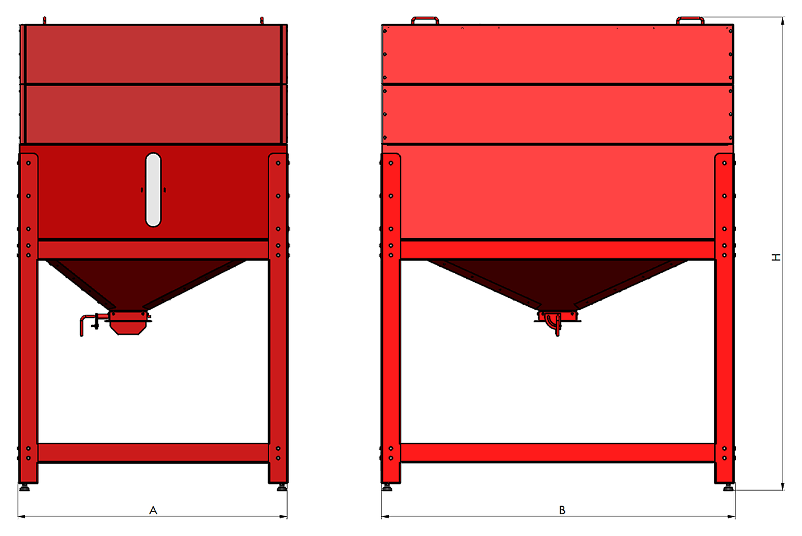
| DIMENSIUNI | DIMENSIUNI | DIMENSIUNI | DIMENSIUNI | DIMENSIUNI | |
|---|---|---|---|---|---|
| A | B | H | V | Cantitate de peleți în siloz | |
| mm | mm | mm | lit. | kg | |
| TKAN 80 Integra | 606 | 1020 | 1736 | 290 | 180 |
| TKAN 100 Integra | 1006 | 1456 | 1872 | 680 | 410 |
| TKAN 150 Integra | 1006 | 1456 | 1872 | 680 | 410 |
| TKAN 200/250/300 Integra | 1394 | 1830 | 1828 | 1600 | 1000 |
| TKAN 200/250/300 Integra | 1394 | 1830 | 2138 | 2330 | 1500 |
| TKAN 200/250/300 Integra | 1394 | 1830 | 2448 | 3115 | 2000 |
POZIȚIONAREA CAZANULUI TKAN ȘI TKAN INTEGRA ÎN CAMERA TEHNICĂ
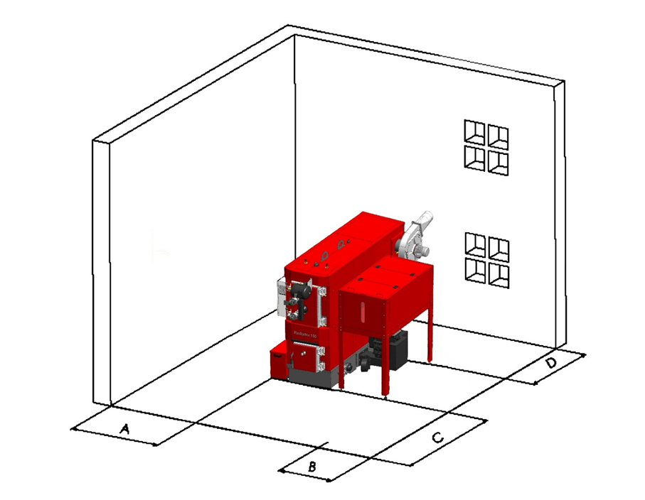
Poziționarea cazanului în camera tehnică
| DIMENSIUNI | DIMENSIUNI | DIMENSIUNI | DIMENSIUNI | |
|---|---|---|---|---|
| Tip cazan | A (mm) | B (mm) | C (mm) | D (mm) |
| TKAN 60 | 100 | 400 | 1000 | 800 |
| TKAN 80 | 500 | 400 | 1000 | 800 |
| TKAN 100 | 500 | 400 | 1000 | 800 |
| TKAN 150 | 500 | 550 | 1000 | 1000 |
| TKAN 200 | 600 | 650 | 1000 | 1000 |
| TKAN 250 | 600 | 900 | 1000 | 1100 |
| TKAN 300 | 600 | 900 | 1000 | 1100 |
| TKAN 80 Integra | 500 | 400 | 1000 | 800 |
| TKAN 100 Integra | 500 | 400 | 1000 | 800 |
| TKAN 150 Integra | 500 | 550 | 1000 | 1000 |
| TKAN 200 Integra | 600 | 650 | 1000 | 1000 |
| TKAN 250 Integra | 600 | 900 | 1000 | 1100 |
| TKAN 300 Integra | 600 | 900 | 1000 | 1100 |
Camera tehnică trebuie protejată împotriva înghețului. Baza pe care se amplasează cazanul trebuie să fie realizată din material incombustibil. Valorile recomandate ale distanțelor pe toate cele patru laturi ale cazanului față de pereții camerei tehnice sau față de alte corpuri rigide (rezervor de acumulare etc.) sunt prezentate în tabelul și imaginea de mai jos.
SISTEME ÎN CASCADĂ
Compania Radijator Inženjering a dezvoltat seria de cazane TKAN în principal pentru arderea biomasei (peleți, sâmburi de fructe) și a lemnului. Atunci când aceste cazane sunt conectate în sisteme în cascadă, se obține o soluție extrem de puternică și flexibilă pentru încălzirea obiectivelor mari.

Utilizarea cazanelor TKAN în cascadă
- Pentru sistemele în cascadă se utilizează cel mai frecvent modele industriale de putere mai mare, precum TKAN 100, 150, 200, 250 și 300 kW.
- Acoperirea puterilor mari: prin conectarea, de exemplu, a două cazane TKAN 300 în cascadă, se obține un sistem cu putere totală de 600 kW, capabil să încălzească hoteluri, hale de producție sau ansambluri rezidențiale.
- Modularitate și flexibilitate: în perioadele de tranziție (toamnă/primăvară) funcționează un singur cazan TKAN în regim optim, iar al doilea pornește doar când temperatura exterioară scade semnificativ.
Particularitățile sistemelor TKAN în cascadă
Modularitate și flexibilitate: în perioadele de tranziție (toamnă/primăvară) funcționează un singur cazan TKAN în regim optim, iar al doilea pornește doar când temperatura exterioară scade semnificativ.
Comandă și automatizare: cazanele TKAN dispun de electronică avansată care, prin regulatoare externe de cascadă, permite funcționarea sincronizată. Automatizarea urmărește temperatura în separatorul hidraulic și comandă cazanul care trebuie să pornească.
Alimentare continuă cu combustibil: cazanele industriale TKAN sunt livrate cu silozuri zilnice, care pot fi conectate prin transportoare melcate suplimentare la un siloz central mare pentru peleți, ce alimentează întreaga cascadă.
Siguranță și continuitate: dacă la un cazan este necesară curățarea cenușii sau service-ul periodic, sistemul hidraulic și automatizarea în cascadă permit celuilalt cazan să continue funcționarea fără întreruperi, astfel încât obiectivul să nu rămână niciodată fără încălzire.
ECHIPAMENTE SUPLIMENTARE
Pentru funcționarea fiabilă și eficientă a instalațiilor industriale de cazane, sistemul poate fi echipat cu componente suplimentare adaptate cerințelor obiectivului și modului de utilizare.
Echipamentele suplimentare includ sisteme pentru dozarea automată și transportul combustibilului, depozitarea peleților, reglarea automată a funcționării, precum și echipamente pentru conectarea și controlul în cascadă al cazanelor.
Soluțiile sunt proiectate în funcție de capacitatea camerei tehnice, autonomia necesară de funcționare și spațiul disponibil, cu scopul de a obține un nivel ridicat de automatizare, fiabilitate și consum optim de combustibil.
- În zona focarului, pentru evacuarea automată a cenușii, se montează două spirale melcate cu acționări electrice proprii. Acestea transportă cenușa în două cutii care trebuie golite periodic.
- Pe ușa ansamblului schimbătorului tubular se montează un sistem de electrovalve care eliberează periodic aer sub presiune și curăță astfel țevile cazanului de cenușă și funingine. Este necesară o sursă de aer comprimat cu capacitate adecvată, precum și automatizare care controlează acest proces.
- Pentru reducerea emisiilor de particule de cenușă în aer, se recomandă montarea ciclonului, în special dacă beneficiarul a instalat și sistem de curățare pneumatică.
- La sistemele mari, unde consumul zilnic de peleți variază de la câteva sute de kilograme până la câteva tone, se recomandă montarea unui siloz mare cu elevator cu cupe. Acesta este conectat la silozul mic prin transportoare melcate, iar întregul proces de alimentare este automatizat prin sonde de minim și maxim în silozul mic.
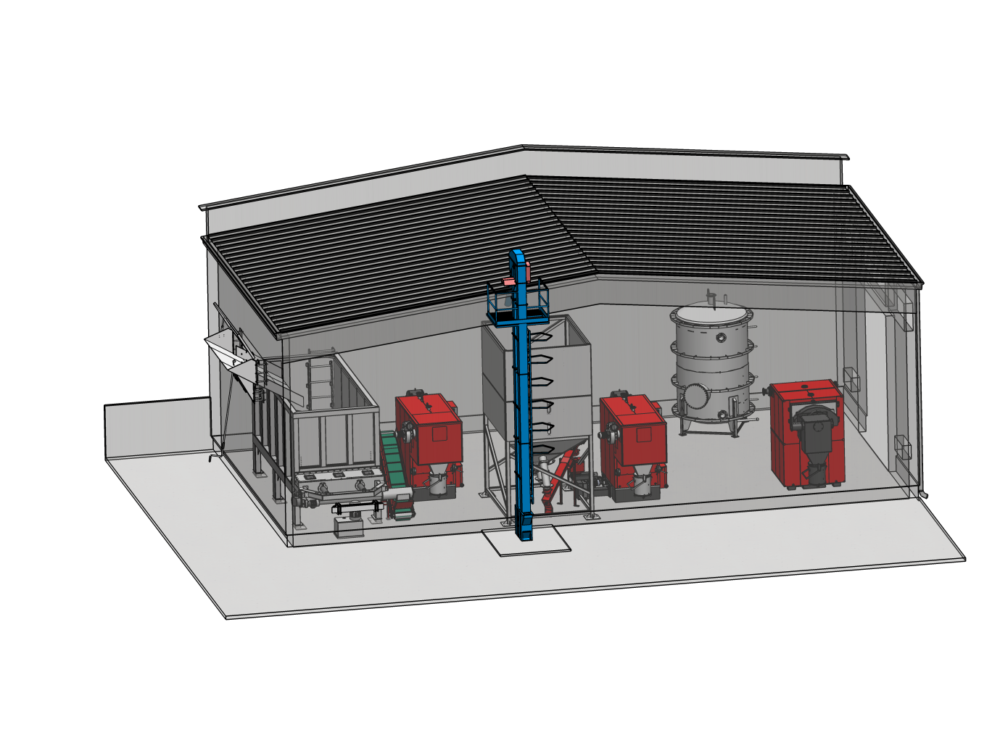

SILOZ ZILNIC DE CAPACITATE MAI MARE
Cazanele standard TKAN sunt echipate cu siloz zilnic, iar pentru sisteme mai mari producătorul permite realizarea unor silozuri externe de capacitate mai mare, cu dimensiuni speciale. În funcție de necesarul sistemului, se pot realiza silozuri cu capacitate de câteva zeci de tone, cu elevator cu cupe.
Silozul exterior mare se conectează la silozul zilnic al cazanului prin transportoare melcate, ceea ce permite alimentarea automată a silozului zilnic prin sonde de minim și maxim. Pentru depozitarea unor cantități mai mari de peleți se pot utiliza și saci Jumbo.
La modelele mai noi TKAN 60-300, silozul zilnic standard are volumul de 800 litri, cu posibilitatea conectării la un siloz exterior mare. Conectarea poate fi realizată lateral sau frontal, în funcție de dispunerea echipamentelor și de condițiile de spațiu. Schema este:
siloz central mare -> transportor melcat -> siloz zilnic TKAN -> melc către focar
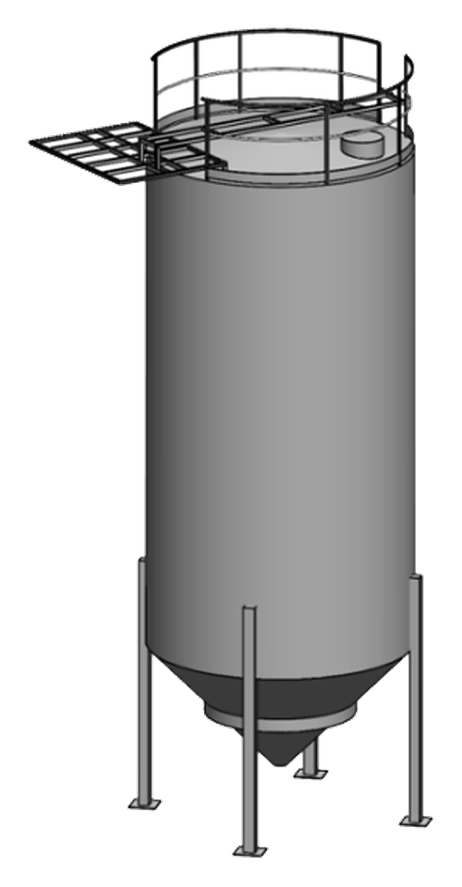


TRANSPORT AUTOMAT AL PELEȚILOR
Producătorul prevede transportoare melcate, acționări/motoare pentru transportoare, conectarea silozului mare cu silozul zilnic, completarea automată a silozului zilnic și sonde de minim și maxim în silozul zilnic.
La sistemele mari se recomandă un siloz mare cu elevator cu cupe, transportoare melcate și completare automată a silozului zilnic prin sonde de minim și maxim. Pentru depozitarea unor cantități mai mari de peleți se pot utiliza și saci Jumbo.
Automatizarea cazanului poate comanda motorul melcului de alimentare din silozul mare.
Pentru o cascadă cu mai multe cazane TKAN, această soluție este deosebit de utilă deoarece permite proiectarea unui sistem central de distribuție a peleților.
La umplerea automată a silozului zilnic se utilizează sonde de minim și maxim. Principiul este: MIN -> pornește transportul peleților, MAX -> oprește transportul peleților. În acest fel cazanul solicită singur combustibil din depozitul central și nu necesită completare manuală.